Se značným zpožděním, ale přece, Péťa konečně zpracoval fotky z naší červnové minidovolené. A tak tu dnes budeme vzpomínat na léto, na prázdniny a na staré “svobodné” časy :-D…
Vzhledem k všelijakým událostem, které nás koncem roku s Péťou čekaly, jsme toto léto dovolenou docela šetřili. O naše tradiční toulky po krásách Čech a Moravy jsme se ale ochudit nechtěli, a tak jsme i letos vyrazili na malý prodloužený víkend - tentokrát do Beskyd.
Našli jsme si hezký hotýlek v Horní Bečvě, která se ukázala být strategickým výchozím bodem pro naše další výlety. První den našeho pobytu jsme navštívili skanzen v Rožnově pod Radhoštěm, který nabízí hned 3 turistické okruhy. Pro začátek jsme se rozhodli zvolit “Dřevěné městečko”, jehož areál prezentuje charakter malého venkovského městečka v období 19. a na počátku 20. století.
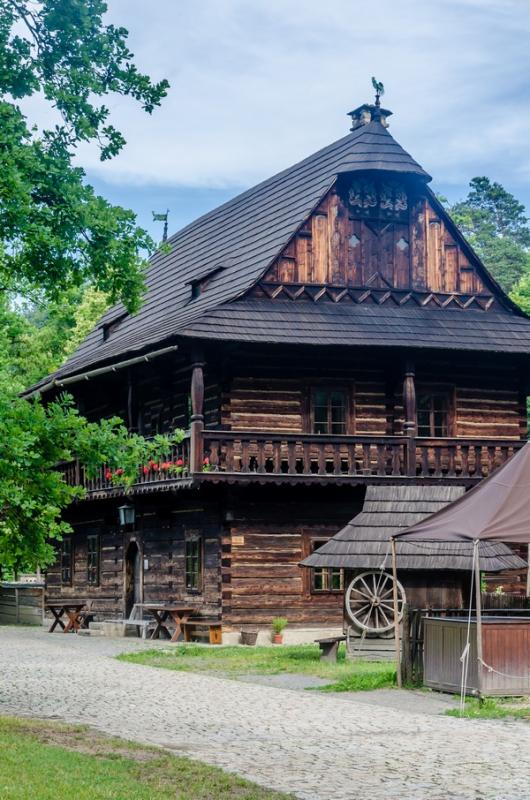
Fojtství z Velkých Karlovic
Najdete tu jak originální přenesené stavby, tak i kopie objektů včetně expozic, které návštěvníky seznamují s podobou tehdejšího bydlení i každodenního života. Jedná se o nejstarší areál rožnovského Valašského muzea v přírodě, které bylo otevřeno v roce 1925. V “městečku” nechybí budova radnice, poštovna, hospoda, tradiční hospodářské stavby či kostel.
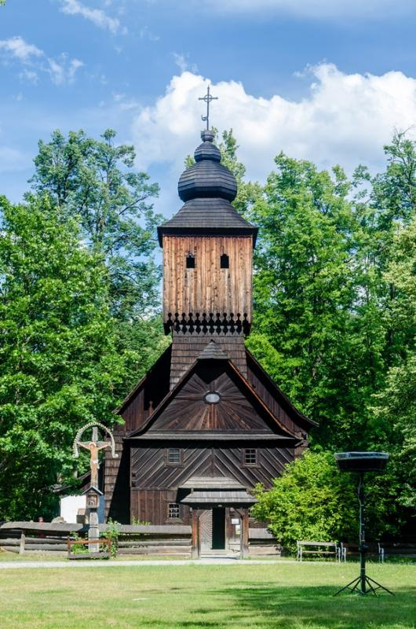
Kostel sv. Anny
Okolo kostela sv. Anny se rozprostírá symbolický hřbitov, v jehož areálu je umístěn tzv. Valašský Slavín s hroby významných rodáků i lidí spojených s historií skanzenu.
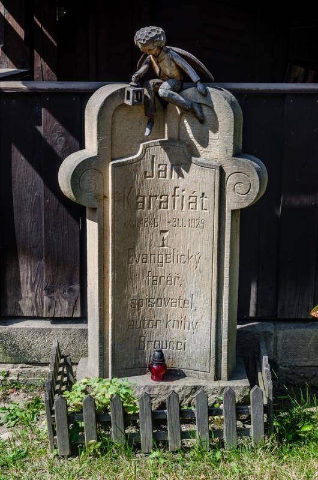
Jan Karafiát
Ve Skanzenu jsme zůstali skoro až do zavíračky. Pak už jsme si jen koupili na večer poctivý valašský frgál a vyrazili čerpat síly do nového dne.
Na pátek jsme si naplánovali povinnou beskydskou túru - výšlap na Radhošť. Dobrá zpráva je, že auto se dá zaparkovat na Pustevnách, odkud vede k vrcholu 4 km dlouhá hřebenová trasa, takže vystoupat až nahoru ke kapličce odsud zvládne i méně fyzicky zdatný jedinec ;-).
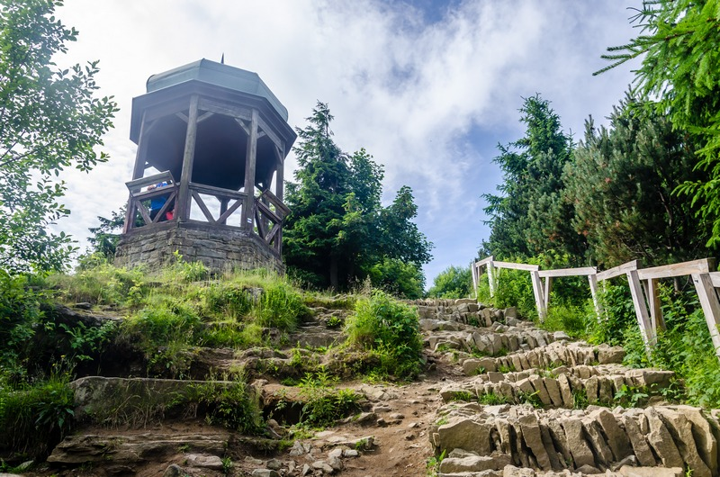
Cesta vzhůru
Pustevny - horské sídlo s dřevěnými secesními stavbami lidového architekta Dušana Jurkoviče - se bohužel zatím stále zotavují z požáru, který zde vypukl a způsobil obrovské škody v březnu 2014. Teprve nyní se rozbíhá rekonstrukce a počítám, že ještě nějakou chvíli potrvá, než toto místo získá zpět svůj původní ráz.
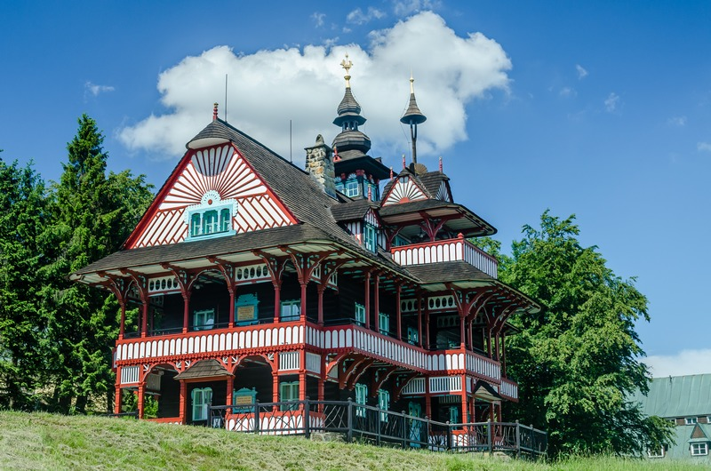
Pustevny
Při stoupání na Radhošť není možné jen tak minout proslulou sochu pohanského boha Radegasta a nedat si u vedle stojícího stánku jedno pívo na osvěžení :-).
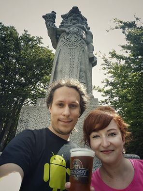
Život je hořký :-)
K Radegastovi jsem se poprvé vydrápala už jako dítě, ale výstup ke kapličce Cyrila a Metoděje byl pro mě turistickou premiérou. Kolem poledne už začalo sluníčko docela slušně připékat, ale měli jsme radost, že nám vyšlo tak krásné počasí, a ta panoramata za to stála!
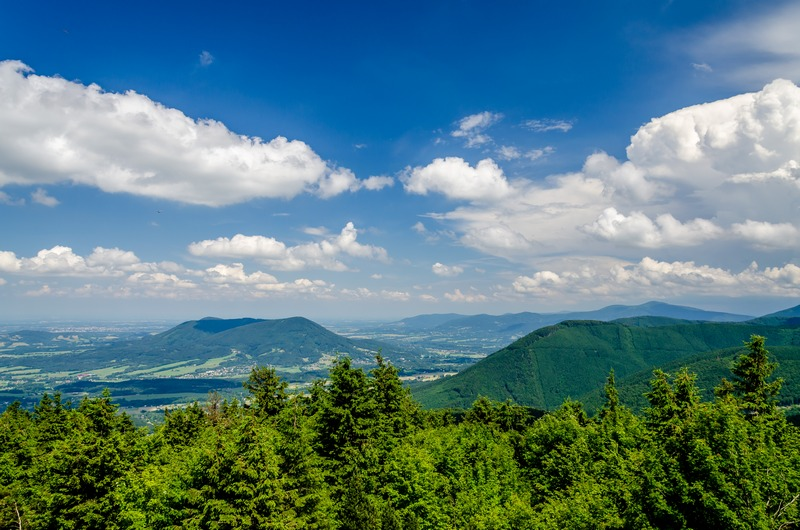
Krása…
Navíc jsme se mohli v krizových chvilkách osvěžit čerstvýma borůvkama, které rostly všude široko daleko. Před posledním cílovým stoupáním jsme si pak dali jako motivaci pořádný kus langoše :-).
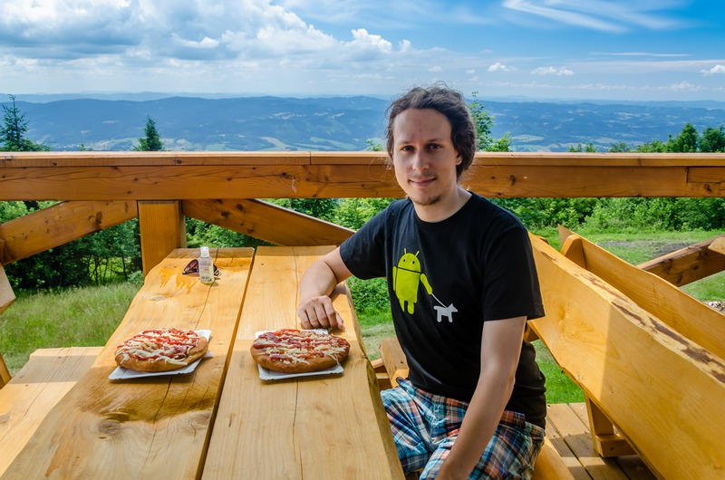
Poslední posilnění před zdoláním vrcholu
A to už jsme byli v cíli - na vrcholku Radhoště, kde stojí kaple sv. Cyrila a Metoděje z roku 1896 a také sousoší těchto věrozvěstů.
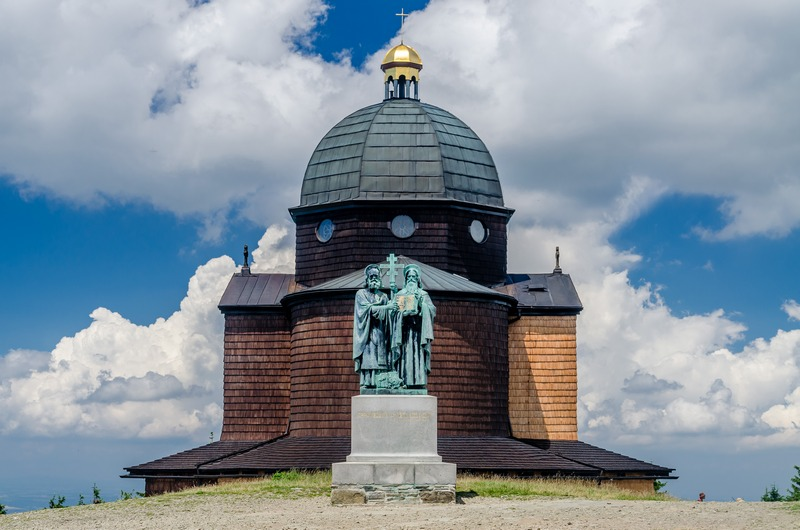
Cyril s Metodějem
Sobotu jsme zahájili dalším, i když o poznání méně náročným, výstupem - a sice na Jurkovičovu rozhlednu. Pokud si vzpomínáte na mé články z projektu “Hrdinou může být každý”, asi se vám vybaví, že otevření této rozhledny před pár lety bylo lehce kontroverzní záležitostí. Rozhledna stojící na Karlově kopci je tak nízká, že se kvůli ní bohužel muselo hojně kácet, aby se zbavila své nálepky “Jurkovičova hvězdárna” ;-)… Dnes už je z rozhledny krásný výhled do okolí, a tak usuzuji, že místní aktivisté ve svém boji asi nebyli příliš úspěšní :(.
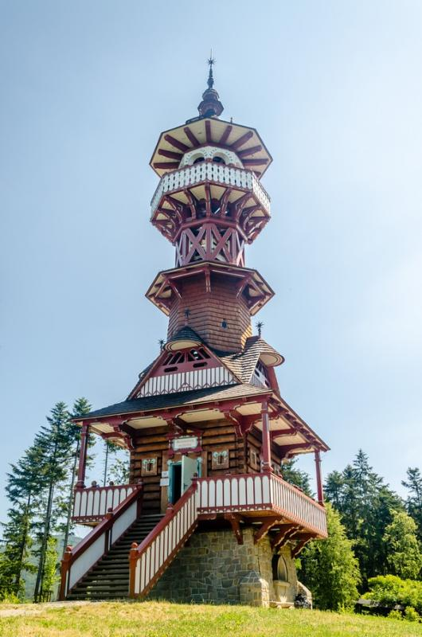
Jurkovičova rozhledna
Po sestupu dolů jsme se opět vrátili do rožnovského skanzenu, tentokrát do areálu “Mlýnská dolina”, kde právě probíhaly Sklářské slavnosti. Mlýnská dolina je nejmladší částí skanzenu, která byla otevřena v roce 1982. Najdete zde dodnes funkční technické stavby převážně na vodní pohon - mlýn, pilu či hamr. Krom ukázek tradičních řemesel v areálu ten den probíhal také kulturní program v podobě lidových tanečních vystoupení a koncertů.
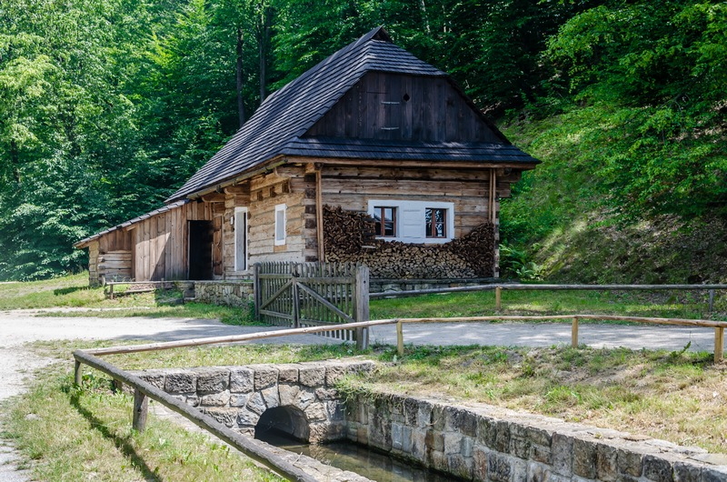
Mlýnská dolina
Ze skanzenu jsme vyrazili rovnou do informačního centra, kde jsme si nechali poradit, jaká místa bychom mohli tady v Rožnově nebo okolí ještě navštívit a nad obědem jsme vymysleli plán. Nakonec jsme se rozhodli přesunout do Frenštátu pod Radhoštěm a vydat se na doporučenou 3 kilometry dlouhou naučnou stezku “Beskydské nebe”, která vede okolo známých skokanských můstků i korunami stromů :-)
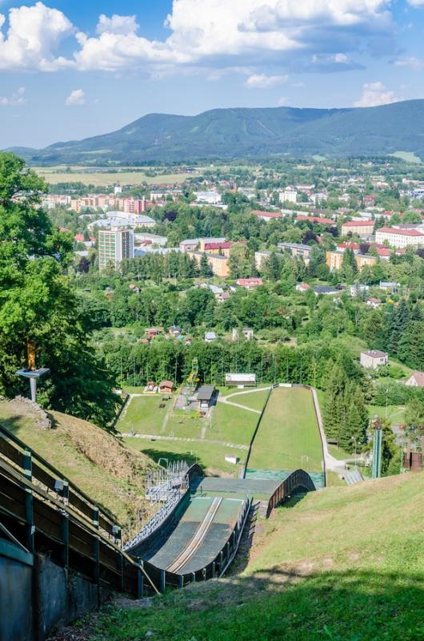
Areál Jiřího Rašky ve Frenštátě
Poslední den naší dovolené počasí bohužel už úplně nepřálo, takže jsme z Horní Bečvy odjížděli za deště a náš původní plán na túru na vrch Soláň jsme pozměnili na výlet do Valašského Meziříčí. Z města jako takového jsme ale byli docela zklamaní. Nejvíc nás dojalo to, že bylo prakticky nemožné najít tu nějakou slušně vypadající a zároveň v neděli otevřenou restauraci, kde bychom se mohli naobědvat. Naše rozhořčení naštěstí utlumila koupě frgálů - nejlepšího lokálního suvenýru, který se nikdy nepřejí :).
A to už byl pomalu čas vydat se na cestu domů. V Beskydech je krásně. Tolik let jsem tam nebyla, že jsem na to úplně zapomněla. Asi budeme do hor vyrážet častěji :)…
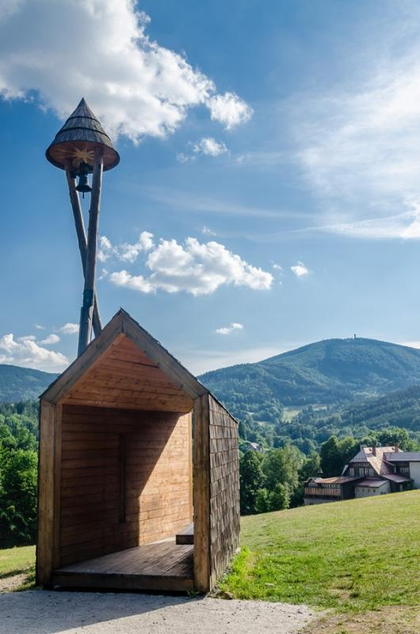
Beskyde, Beskyde :)